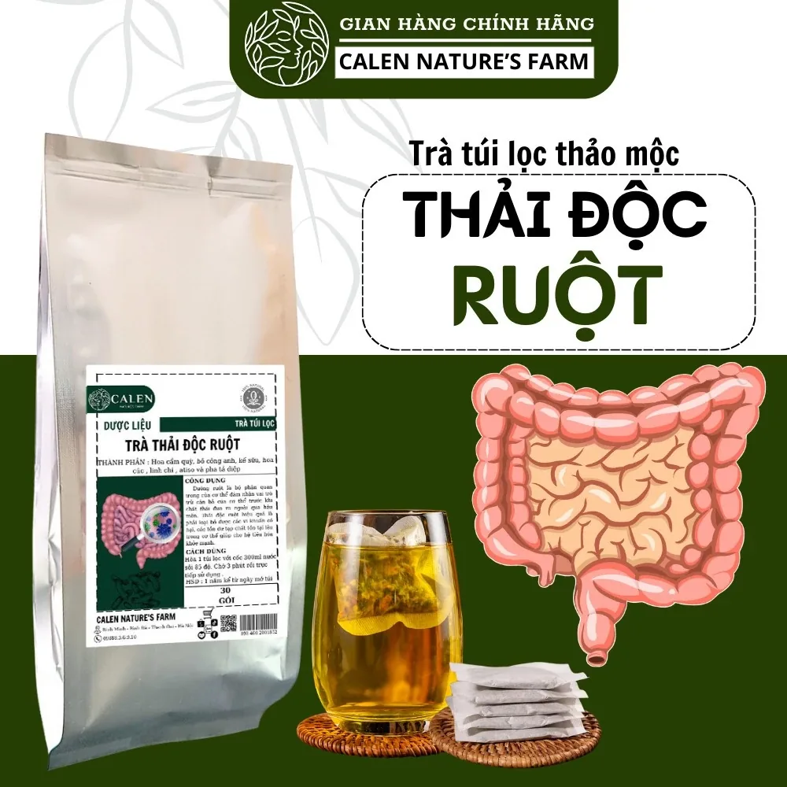
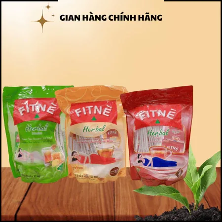
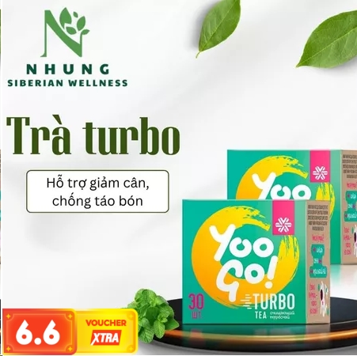
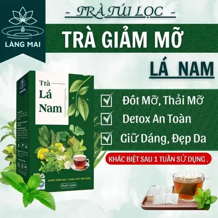
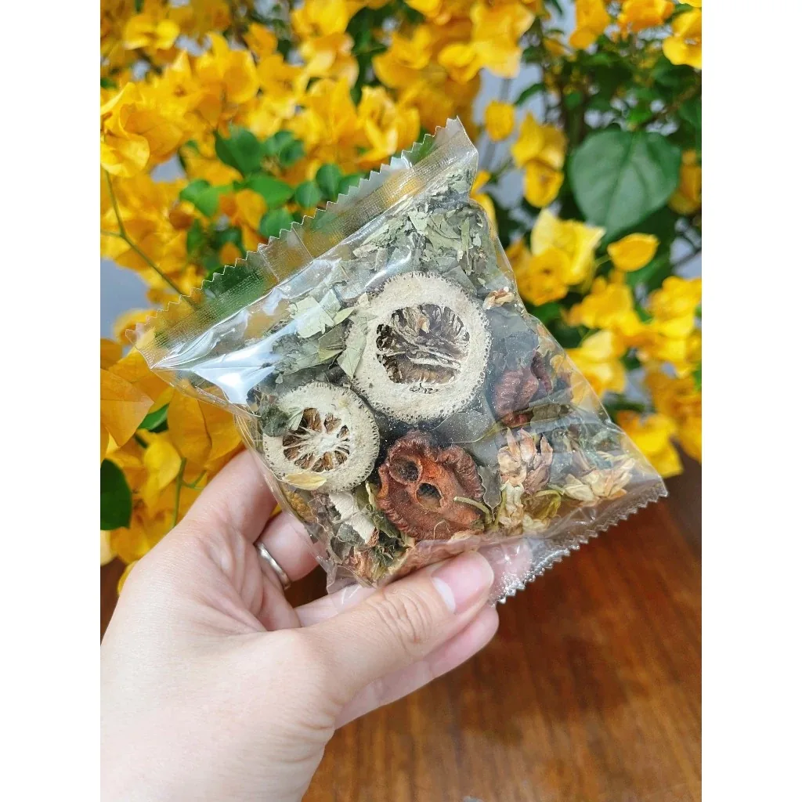
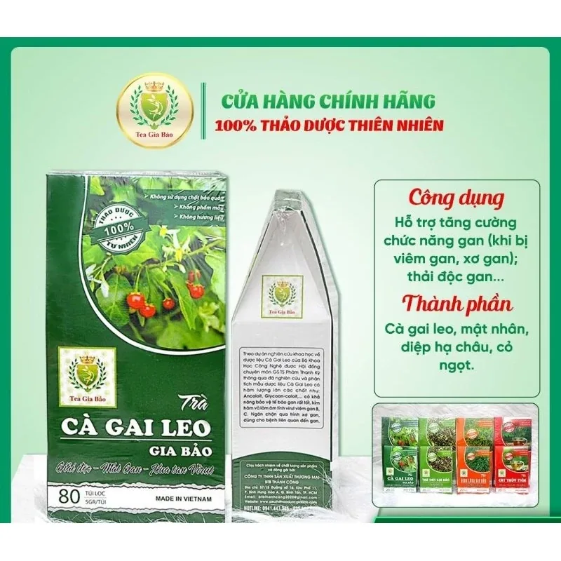

Đánh giá thực tế
Nội dung tập trung vào trải nghiệm dùng và độ phù hợp theo nhu cầu của từng nhóm người.
Nội dung tập trung vào trải nghiệm dùng và độ phù hợp theo nhu cầu của từng nhóm người.
Một số liên kết là affiliate Shopee, giá không đổi và luôn ưu tiên nội dung có ích cho người đọc.
Link và giá được rà soát thường xuyên để hạn chế lỗi chuyển trang hoặc sai thông tin ưu đãi.

129.000đ118.996đ

350.000đ250.000đ

120.000đ105.000đ

89.000đ66.750đ

130.000đ130.000đ

510.000đ484.500đ
Kiến thức nền
Tổng quan về mục tiêu sử dụng, nhóm người phù hợp và các trường hợp nên thận trọng trước khi dùng.
Đọc thêmCách dùng
Gợi ý lịch sáng - trưa - tối dễ áp dụng để duy trì đều mà không ảnh hưởng sinh hoạt hằng ngày.
Đọc thêmLưu ý an toàn
Cách đọc thành phần, đánh giá gian hàng và phản hồi người mua để giảm rủi ro khi đặt hàng.
Đọc thêmPha loãng hơn bình thường, ưu tiên uống sau bữa sáng và tăng nước lọc trong ngày.
Theo dõi tiêu hóa, giấc ngủ và giữ chế độ ăn nhẹ để đánh giá mức độ phù hợp của trà.
Nếu cơ thể đáp ứng tốt, có thể tăng lên 2 lần/ngày và thêm vận động nhẹ 20-30 phút.
Đánh giá tổng thể để chọn sản phẩm duy trì lâu dài, không cần thay đổi quá nhiều cùng lúc.
"Mình thích vì có checklist rõ ràng nên chọn mua nhanh mà đỡ thử sai."
Lan, 29 tuổi"Lộ trình 7 ngày dễ làm theo, phù hợp người đi làm bận rộn như mình."
Minh, 33 tuổi"Có ghi chú affiliate minh bạch nên mình thấy yên tâm hơn khi tham khảo."
Thảo, 26 tuổiNên dùng sau bữa sáng hoặc sau bữa tối 1-2 giờ. Tránh dùng quá muộn nếu bạn nhạy với thành phần thảo mộc.
Thường từ 5-14 ngày tùy cơ địa, chế độ ăn và mức độ duy trì đều đặn mỗi ngày.
Không. Đây là website tổng hợp và dẫn link sang Shopee để bạn mua trực tiếp từ gian hàng.
Nhấn vào danh sách top sản phẩm để kiểm tra giá cập nhật và ưu đãi theo thời điểm mua.
Trà Thải Độc là blog dành cho dân văn phòng, tập trung vào trà thảo mộc, routine nhẹ nhàng và lối sống cân bằng.
Một số liên kết trên website là link affiliate Shopee. Chúng tôi có thể nhận hoa hồng nhỏ nếu bạn mua qua link, không làm tăng giá sản phẩm.
Nội dung trên website chỉ mang tính tham khảo thông tin, không thay thế tư vấn y tế chuyên môn.
Cập nhật lần cuối: 31/05/2026